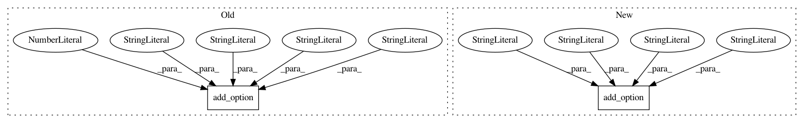

16c325afa3ca0dac507f158542c735461a902d06,bin/basenji_sad_multi.py,,main,#,40
Before Change
parser.add_option("-f", dest="genome_fasta",
default="%s/data/hg19.fa" % os.environ["BASENJIDIR"],
help="Genome FASTA for sequences [Default: %default]")
parser.add_option("--local",dest="local",
default=1024, type="int",
help="Local SAD score [Default: %default]")
parser.add_option("-n", dest="norm_file",
default=None,
help="Normalize SAD scores")
parser.add_option("-o",dest="out_dir",
After Change
parser.add_option("--cpu", dest="cpu",
default=False, action="store_true",
help="Run without a GPU [Default: %default]")
parser.add_option("-e", dest="conda_env",
default="tf2.2-gpu",
help="Anaconda environment [Default: %default]")
parser.add_option("--name", dest="name",
default="sad", help="SLURM name prefix [Default: %default]")
parser.add_option("--max_proc", dest="max_proc",
default=None, type="int",
In pattern: SUPERPATTERN
Frequency: 4
Non-data size: 2
Instances
Project Name: calico/basenji
Commit Name: 16c325afa3ca0dac507f158542c735461a902d06
Time: 2020-10-12
Author: drk@calicolabs.com
File Name: bin/basenji_sad_multi.py
Class Name:
Method Name: main
Project Name: calico/basenji
Commit Name: 3ed55967ba265af24f6fcef83ef068a1878528d6
Time: 2020-10-12
Author: drk@calicolabs.com
File Name: bin/basenji_sad_ref_multi.py
Class Name:
Method Name: main
Project Name: calico/basenji
Commit Name: 43c7dd612cf3938b3c95636802ec604af67b21d2
Time: 2017-09-30
Author: drk@calicolabs.com
File Name: bin/bam_cov.py
Class Name:
Method Name: main
Project Name: calico/basenji
Commit Name: c35e14bf110de2ac925d6ae40e1db37b425d11a0
Time: 2018-02-26
Author: drk@calicolabs.com
File Name: bin/basenji_sad_multi.py
Class Name:
Method Name: main